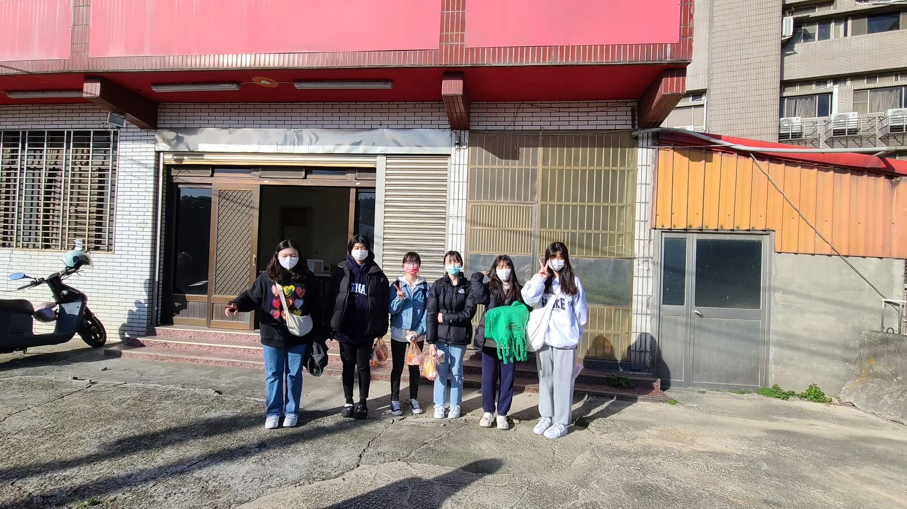
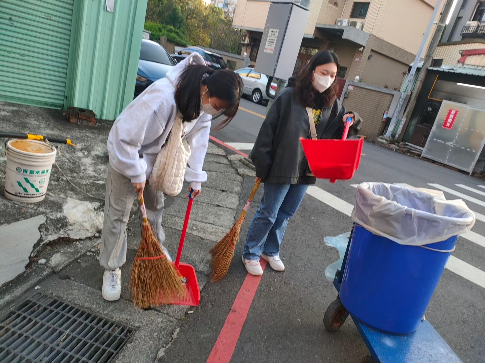

Education
中壢高商 - 資料處理科
中原大學 - 資訊管理學系 (2023 - 現今)
Skills
Word - 90%
PPT - 85%
Excel - 80%
Access - 75%
Photoshop - 75%
Python - 75%
Java - 70%
HTML - 80%
Experience


-
參加社區打掃活動後，我深刻體會到其他志工的辛苦。每個人都積極投入清潔工作，無論是街道亦或是公共場所，每一處都不容忽視。看著志工努力維護社區的整潔，我不禁感到由衷的敬佩與感激。這樣的團結與付出，讓我更願意參與並貢獻自己的力量，也讓我對志工們的無私奉獻有了更深的理解。